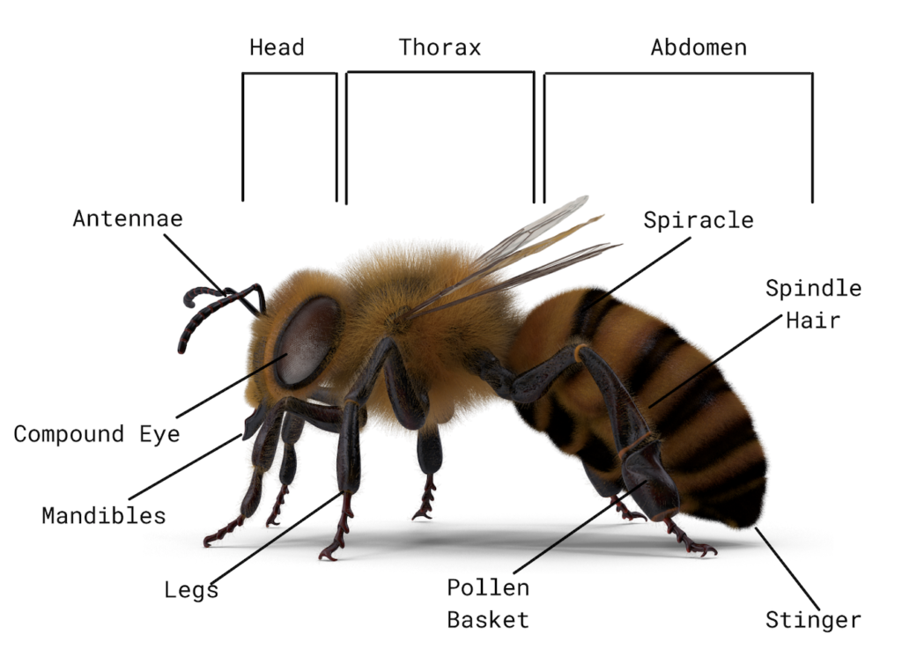

Honey bees, also known as “honeybees,” are a group of insect species in the genus Apis. These insects are eusocial, which means they form large, complex societies. They are best known for building hives to store honey, and it is common to farm them for this reason. While they are not the only bees that can produce honey, the only true “honeybees” are in the genus Apis. Read on to learn about the honey bee.
There are 7 different species of honey bees, and 44 different subspecies. Each species and subspecies has its own minute differences in appearance. However, all have the same basic anatomy.

Their bodies consist of a head, thorax (or midsection), and abdomen (or rear section). The first section, the head, contains a pair of antennae, and mouthparts. Next, the thorax is where the wings and six legs, attach to the body. Finally, the famous stinger is at the end of the abdomen.
Though people often fear these insects, particularly because some people are allergic to them, they are actually extremely important creatures. Honeybees are the chief pollinators of a number of plants. Learn more fun facts about honeybees below!
These insects require habitats with plenty of feeding opportunities nearby, namely, flowering plants. They can live in natural habitats, agricultural areas, and urban parks or gardens. Their preferred habitats include orchards, meadows, gardens, woodlands, and virtually anywhere with plenty of flowers growing.

Honey bees are also capable of surviving in cold climates, and thermoregulate by huddling within the nest. The bees actually shiver to increase the temperature inside the hive.

Contact Us: +123456789
Address: Bock-G Bashundhara R/A, Dhaka